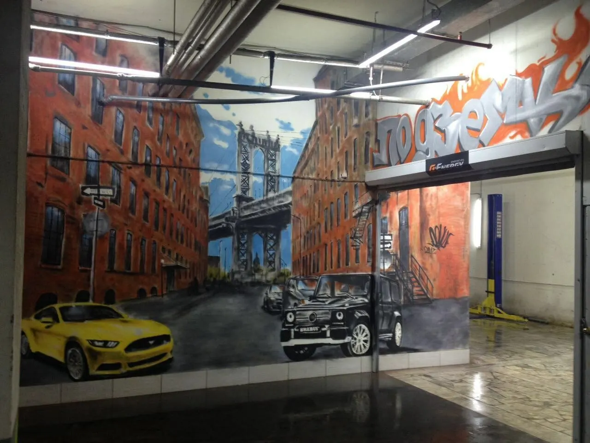
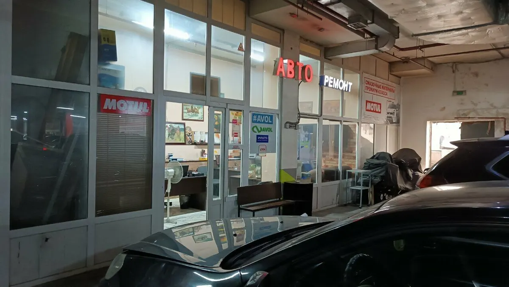
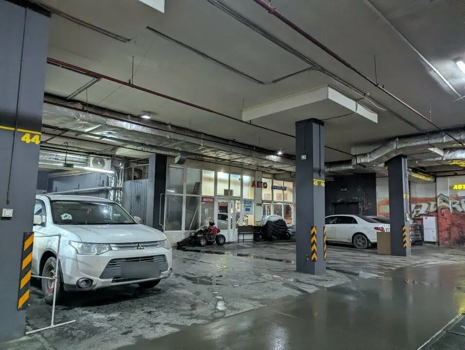
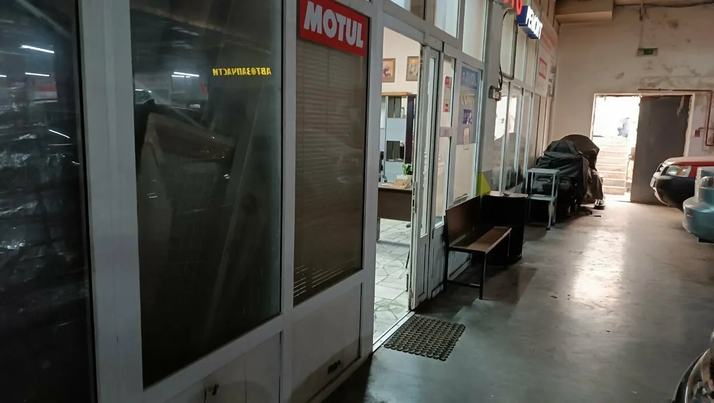

Автосервис · магазин запчастей · Казань
Автосервис в Казани: ремонт, замена масла и магазин запчастей при сервисе
Московская, 44к1. Замена масла, замена и ремонт турбин, промывка интеркулера, подбор запчастей. Не дозвонились – запишитесь в WhatsApp.
- Магазин запчастей при сервисе
- Легковые: отечественные, европейские, японские, корейские
- Запись в WhatsApp – день и время на выбор

Услуги
Услуги – с карточки на Яндекс.Картах и из отзывов клиентов. Прайса на карточке нет, поэтому цену уточняйте по вашей машине.
Ремонт и обслуживание
- Замена маслауточнить
- Замена и ремонт турбиныпо отзыву – была восстановленная турбинауточнить
- Промывка интеркулерауточнить
- Ремонт легковых автомобилейотечественные, европейские, японские, корейские, китайскиеуточнить
Запчасти и советы
- Подбор запчастеймастера дают рекомендации, чтобы было из чего выбратьуточнить
- Рекомендации по обслуживаниюуточнить
Цену уточните в WhatsApp или по телефону: напишите марку, год и что случилось.
Как это проходит
- 01
Пишете в WhatsApp
Выбираете услугу, день и время – сообщение готово, остаётся отправить. Можно и позвонить.
- 02
Мастер объясняет, что и как
«Все рассказал как что работает, дал дельные советы, о которых раньше вообще и не знал», – Дмитрий Лазарев, отзыв на Картах.
- 03
Без накруток
«Знающие мастера, не накручивают, дают рекомендации по обслуживанию», – Tim Rosh, отзыв на Картах.
- 04
Дальше – спокойно ехать
«Проехал уже больше 10000 км… все отлично, сухо, машина летит!» – Дмитрий Лазарев о ремонте турбины.



За что хвалят в отзывах
Быстро и без обмана
«Делают все качественно, быстро и без обмана», – Альбина Г., отзыв на Картах.
Мастер Эдуард
«Отдельное спасибо мастеру Эдуарду. Мастер от бога», – Альбина Г.
Нужная запчасть нашлась
«Полетела турбина, благо у них была восстановленная турбина, оперативно поменяли», – Дмитрий Лазарев.
Магазин запчастей при сервисе
«Магазин по автозапчастям при сервисе есть», – Tim Rosh, отзыв на Картах.
Отзывы с Яндекс.Карт
«Отличный сервис! Был проездом в Казани, полетела турбина, благо у них была восстановленная турбина, оперативно поменяли, заменили масло промыли интеркуллер, все сделали как надо, проехал уже больше 10000 км, приехал на замену масла, у себя в городе, все отлично, сухо, машина летит! Рекомендую Отдельное спасибо Айрату, все рассказал как что работает, дал дельные советы, о которых раньше вообще и не знал. Молодцы!!!»
Дмитрий Лазарев · 10 сентября 2025
«Автосервис просто класс! Делают все качественно, быстро и без обмана. Отдельное спасибо мастеру Эдуарду. Мастер от бога. Всем советую этот отличный автосервис»
Альбина Г. · 14 сентября 2025
«Хороший автосервис. Знающие мастера, не накручивают, дают рекомендации по обслуживанию и по автозапчастям, чтобы было из чего выбрать. Магазин по автозапчастям при сервисе есть.»
Tim Rosh · 14 октября 2021
Отзывы с карточки на Яндекс.Картах, без правок.
Частые вопросы
Где вы находитесь?
Казань, Московская улица, 44к1. Wi-Fi есть.
Какие машины обслуживаете?
На карточке указаны легковые и коммерческие: отечественные, европейские, японские, корейские, китайские марки. Если не уверены – напишите марку и модель в WhatsApp.
Есть ли магазин запчастей?
Да, при сервисе есть магазин автозапчастей – об этом пишут в отзывах. Что есть в наличии, уточняйте в WhatsApp.
Сколько это стоит?
Прайса на карточке нет, цену уточняйте: напишите марку, год и что случилось.
Можно записаться без звонка?
Да: выберите услугу, день и время – готовое сообщение уйдёт в WhatsApp. Можно и позвонить: +7 (843) 259-55-74.
Когда вы работаете?
Часы работы уточняйте в WhatsApp или по телефону.
Не дозвонились – напишите в WhatsApp
- Адрес
- Московская ул., 44к1, Казань
- Часы
- Ежедневно 09:00–18:00
- Телефон
- +7 (843) 259-55-74